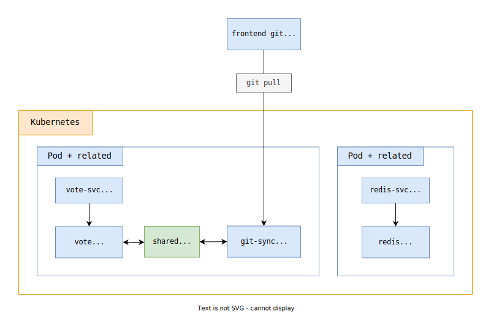
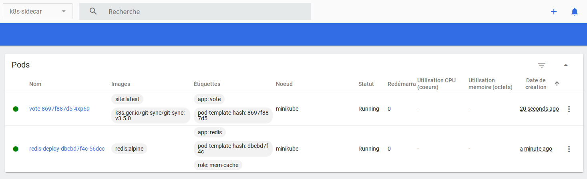

Kubernetes + Sidecar Pattern + Minikube
- Run a voting application using an express website and redis
- Run locally using docker images and docker-compose
- Run locally using minikube
- Explore the Sidecar pattern

Setup the project
Get the code from this github repository :
# download the code + the submodule with the option --recursive
$ git clone \
--depth 1 \
--recursive \
https://github.com/jeromedecoster/k8s-sidecar-pattern.git \
/tmp/note
# cd
$ cd /tmp/note
The Sidecar pattern
The Sidecar pattern is the second of the structural models described in the Bilgin Ibryam and Roland Huß book

Kubernetes manages pods instead of containers and pods encapsulate containers. A pod may contain one or more containers.
A pod that contains one container refers to a single container pod and it is the most common kubernetes use case.
A pod that contains Multiple co-related containers refers to a multi-container pod.
The sidecar pattern represents the following ideas :
- We are in the case of the multi-container pod with a main container and one or more additional containers.
- Sidecar containers are the containers that work alongside the main container in the pod.
- The main container works perfectly and we want to update it as few times as possible.
- We want to use the additional containers to perform tasks without modifying the main container.
Sidecar containers are typically used to sync some static files using a git pull action :
- The main container is a file server that uses static assets (html pages, images) or an application that uses static data (json, csv files).
- The sidecar container is a daemon (background process like a cron job) that will do a regular
git pullto a remote repository. - A volume is shared between these 2 containers.
- Updated files are written to this shared volume.
- The main container uses these updated files but is not responsible for the update process.
To demonstrate other possibilities of the sidecar pattern, we often find the example of log management :
- The main container is an application that generates logs.
- A sidecar container runs a daemon that will regularly send these logs to a remote application (elasticsearch, cloudwath) or to a remote storage service (S3 bucket).
- A volume is shared between these 2 containers.
- The main container writes logs to this shared volume.
- The sidecar container collects and sends them.
But in reality, when you want to manage the sending of logs in kubernetes, you use a dedicated application rather than developing yourself. Using for example Fluentd. It is this software that will manage the collection and sending via a DaemonSet.
The sidecar pattern is used by FluentD, via the DaemonSet, but we are not actually the author.
Exploring the project
The project is a simple voting application. A website that uses a Redis database.

We reuse and modify the Init Container Pattern demo project.
The purpose of this demo is to split the previous project into 2 separate git repositories :
- The web server part will be hosted in a repository.
- The frontend assets in another repository.
- The server repository uses the git submodule functionality to be able to work more easily during the development phase.
- When our application will live within a kubernetes cluster, a daemon will perform a regular
git pullto retrieve any updates on the frontend part.
This implementation unnecessarily complicates our previous project which was simple. This is of course a demonstration made on the most minimalist project possible.
The use of this technique can however prove to be interesting in certain cases of large project where the update of static files can be frequent. This avoids frequent blue/green redeployments of our application.
The front part is hosted on this repository.
The project is added as a submodule like this :
$ git submodule add git@github.com:jeromedecoster/k8s-sidecar-pattern-frontend.git front
Running the project
We start the project :
# run redis alpine docker image
$ make redis
This command runs this script :
docker run \
--rm \
--name redis \
--publish 6379:6379 \
redis:alpine
We execute the following command in another terminal :
# run local website using npm - dev mode (livereload + nodemon)
$ make npm
We open the URL http://localhost:3000/
Local test using docker-compose
Before testing in minikube, it’s a good idea to use docker-compose to orchestrate the containers that make up the application locally. It’s a good step.
The docker-compose.dev.yml file is quite simple :
version: "3"
services:
vote:
build:
context: ./vote
dockerfile: Dockerfile.dev
args:
- NODE_ENV=development
- WEBSITE_PORT=4000
- FRONT=/sync/git/repo
volumes:
- front:/sync:ro
- "./vote:/app"
ports:
- "4000:4000"
- "35729:35729"
networks:
- backend
depends_on:
- redis
git-sync:
image: k8s.gcr.io/git-sync/git-sync:v3.5.0
volumes:
- front:/tmp:rw
environment:
GIT_SYNC_REPO: https://github.com/jeromedecoster/k8s-sidecar-pattern-frontend.git
GIT_SYNC_BRANCH: master
GIT_SYNC_DEST: repo
GIT_SYNC_WAIT: 10
redis:
image: redis:alpine
ports:
- "6379:6379"
networks:
- backend
networks:
backend: {}
volumes:
front:
The git-sync service uses the docker image that comes from this repository
We create a front volume which is shared by the git-sync and the vote services.
The git-sync service get the data from the repository in the /sync/git/repo folder.
The vote service set the environment variable FRONT=/sync/git/repo.
The express server retrieves path for its static assets :
const FRONT = process.env.FRONT || '../front'
const app = express()
app.use(express.static(FRONT + '/public'))
We execute the following command :
# run the project using docker-compose (same as redis + npm)
$ make compose-dev
This command runs this script :
$ export COMPOSE_PROJECT_NAME=k8s_sidecar
$ docker-compose \
--file docker-compose.dev.yml \
up \
--remove-orphans \
--force-recreate \
--build \
--no-deps
We open the URL http://localhost:4000/

We connect to the vote container through a new terminal window :
$ CONTAINER_ID=$(docker ps --filter name=vote --format {{.ID}} | head -n 1)
$ docker exec -ti $CONTAINER_ID /bin/sh
We check the contents of the folder /sync/git/repo/ :
# ls /sync/git/repo/
README.md public views
Using minikube
We start minikube :
$ minikube start --driver=docker
We launch the Kubernetes dashboard in a new terminal window :
# new terminal window
$ minikube dashboard
In case of any error, try a hard reset :
$ minikube delete -p minikube
Target the local docker registry :
$ eval $(minikube -p minikube docker-env)
Rebuild the docker images in this registry :
# /!\ must be in the same terminal window than previous command
$ make docker-build
We create the kubernetes namespace with the ns.yaml template :
$ kubectl apply -f k8s/ns.yaml
In a new terminal window we now launch the redis instance with the redis.yaml template :
$ kubectl apply -f k8s/redis.yaml
The redis pod is added :
And the now vote.yml template :
kind: Deployment
metadata:
name: vote
namespace: k8s-sidecar
labels:
app: vote
spec:
replicas: 1
selector:
matchLabels:
app: vote
template:
metadata:
labels:
app: vote
spec:
containers:
- name: vote
image: site:latest
volumeMounts:
- name: front
mountPath: /tmp
env:
- name: REDIS_HOST
value: "redis-svc"
- name: FRONT
value: "/tmp/git/repo"
ports:
- containerPort: 3000
name: vote
imagePullPolicy: Never
- name: init-sync-ctr
image: k8s.gcr.io/git-sync/git-sync:v3.5.0
volumeMounts:
- name: front
mountPath: /tmp
resources: {}
env:
- name: GIT_SYNC_REPO
value: https://github.com/jeromedecoster/k8s-sidecar-pattern-frontend.git
- name: GIT_SYNC_BRANCH
value: master
- name: GIT_SYNC_DEPTH
value: "1"
- name: GIT_SYNC_DEST
value: "repo"
volumes:
- name: front
emptyDir: {}
We apply the template :
$ kubectl apply -f k8s/vote.yaml
The vote pod is added :

To access the service, we list the available URLs :
$ minikube service list
|----------------------|---------------------------|--------------|---------------------------|
| NAMESPACE | NAME | TARGET PORT | URL |
|----------------------|---------------------------|--------------|---------------------------|
| default | kubernetes | No node port | |
| k8s-sidecar | redis-svc | No node port | |
| k8s-sidecar | vote-svc | 9000 | http://192.168.49.2:31000 |
| kube-system | kube-dns | No node port | |
| kubernetes-dashboard | dashboard-metrics-scraper | No node port | |
| kubernetes-dashboard | kubernetes-dashboard | No node port | |
|----------------------|---------------------------|--------------|---------------------------|
We open http://192.168.49.2:31000/
We will now modify the content of the repository added as a submodule.
We will now modify a style element in the main.css file :

We modify the background color to yellow :
We commit this change :
We reload your browser. Our site running in the minikube cluster is already updated :
The demonstration is over, we can destroy our resources.